Farmacêutica da farmácia oncológica de um hospital em São Paulo, estagnada e sem experiência em pesquisa clínica: recolocação em uma multinacional de pesquisa clínica em 4 meses.

Grupo gratuito da Oncoclass para farmacêuticos em Oncologia
Seja um farmacêutico com mais segurança, domínio e se torne uma referência na Oncologia.
Entre no grupo gratuito da Oncoclass no WhatsApp para ter acesso a uma condição especial de matrícula
A maior comunidade de Farmacêuticos Oncológicos do BRASIL
Você vai ter acesso a um tema de Oncologia por semana, do fundamento à evolução científica.
A Oncoclass é um ecossistema de Oncologia para farmacêuticas. Toda quarta, você vai ter acesso a uma aula ao vivo sobre um tema. Você entende o mecanismo, sabe o que vigiar e sai com a resposta para as perguntas que o oncologista faz.
Sem decoreba. Sem estudar em pedaços. Sem depender de achar tempo sozinha: a aula chega até você.
Toda aula segue os 5 passos do Método OncoIntelecto
- 01
Fundamento
O que é, como funciona e por que importa.
- 02
Tratamento
Classes, fármacos e mecanismo de ação esquematizado.
- 03
Segurança
Toxicidades, interações, riscos e manejo.
- 04
Aplicação
O caso, o cálculo ou a situação real, com as perguntas do oncologista e a resposta.
- 05
Evolução
Onde se atualizar e o que vem por aí.
Na prática
- Aula ao vivo toda quarta
- Gravação e PDF completo na área de membros
- Mapa da aula de uma página para revisar no plantão
- Grupo de assinantes com dúvidas respondidas pela Ellen
Até dezembro
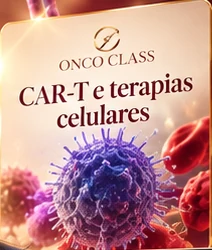
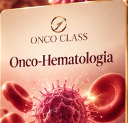
- Oncohematologia
- Cálculos em Oncologia
- Pesquisa clínica
- Anticorpos conjugados
- Biespecíficos
- Emergências oncológicas
- Vacinas de mRNA
- Carreira em Oncologia
- O profissional de Oncologia de 2030
QUERO ENTRAR NO GRUPO VIP
São apenas 17 vagas para ter acesso a essa condição especial
Quem faz parte da Onco Class
Farmacêuticos que hoje têm mais segurança, domínio e são uma referência na Oncologia
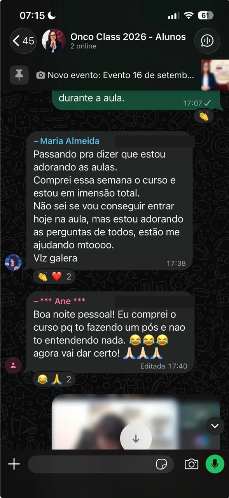
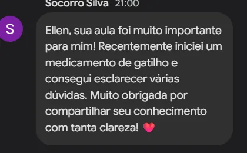
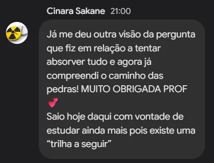
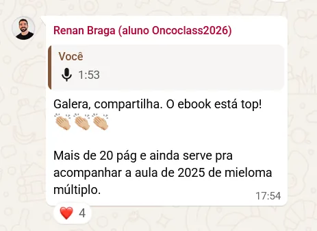
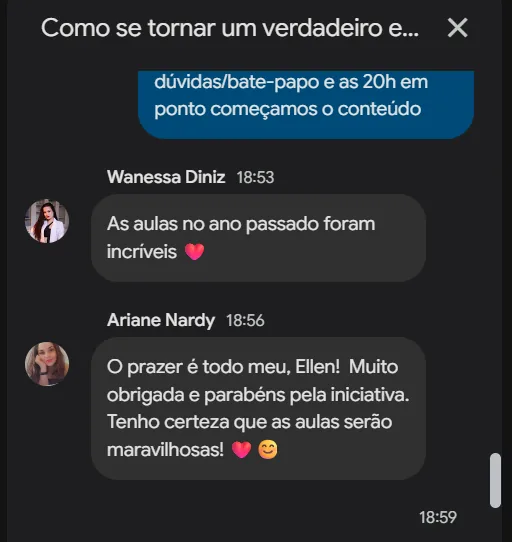
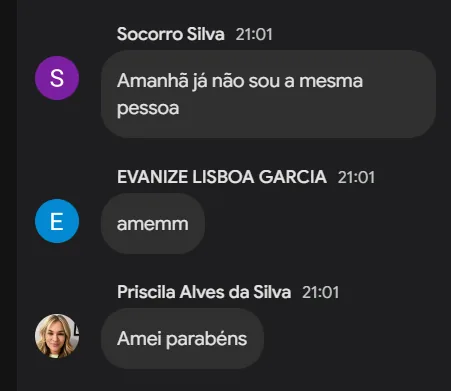
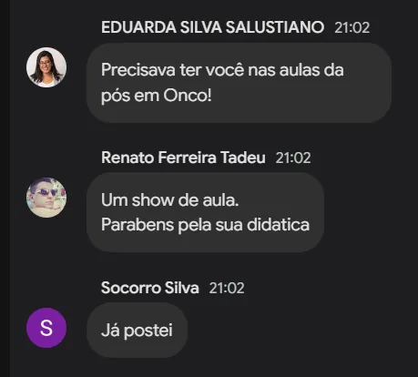
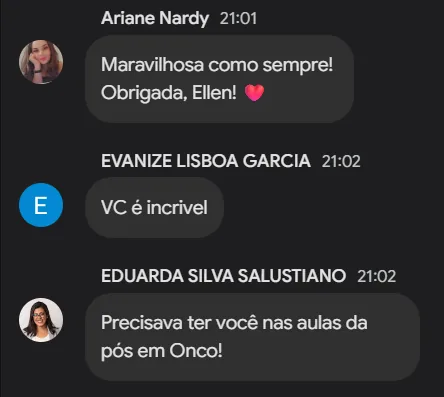
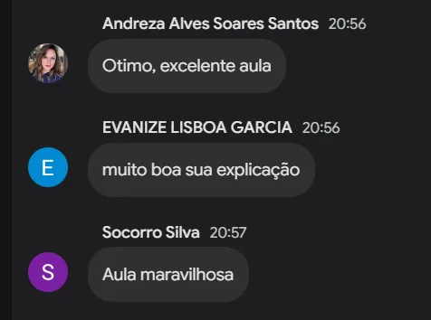
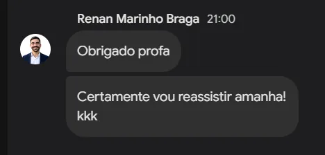
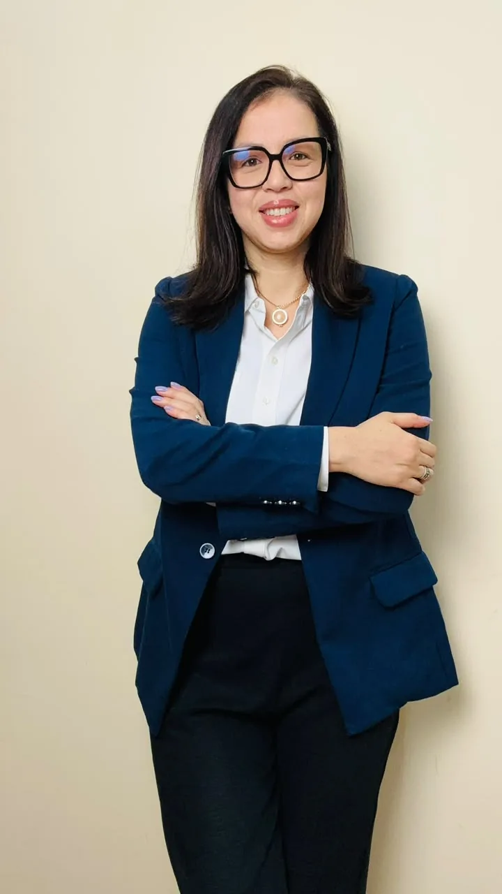
Quem será sua mentora
Ellen Mayara Corrêa
Farmacêutica, especialista e mestre em Oncologia.
Foram 15 anos dentro da farmácia oncológica hospitalar, validando prescrição, interceptando erro e respondendo médico, antes de ensinar qualquer coisa.
- 15anos na farmácia oncológica hospitalar
- 32farmacêuticos mentorados
- +16 milprofissionais no YouTube, LinkedIn e Instagram
- 2022Especialista em Farmácia Oncológica pela Sobrafo.
- 2024Mestre em Oncologia pelo A.C. Camargo Cancer Center.
- 2026Pesquisa clínica no Hospital Albert Einstein.
Professora de pós no ICTQ, Racine e FOC, coautora de dois livros, aprendendo Oncologia de um jeito que dá pra entender.
Quem ela já ajudou a mudar de patamar
Técnica de farmácia que se formou em Farmácia e buscava entrar na pesquisa clínica: recolocação em uma multinacional de pesquisa clínica em 4 meses.
Farmacêutico oncológico desempregado: recolocação como farmacêutico responsável pela pesquisa clínica do Hospital Alemão Oswaldo Cruz.
A próxima pergunta do médico não vai esperar você se sentir pronta. Entre no grupo e garanta acesso à condição especial antes que as 17 vagas sejam preenchidas.
QUERO ENTRAR NO GRUPO VIP